DRIVE/ HUD
FOR THE LOVE OF THE LAP
Eyes up.
Race on.
Your favourite car. Your corner of the grid. A familiar LMU HUD, with a little more you in it.
Come on in ↓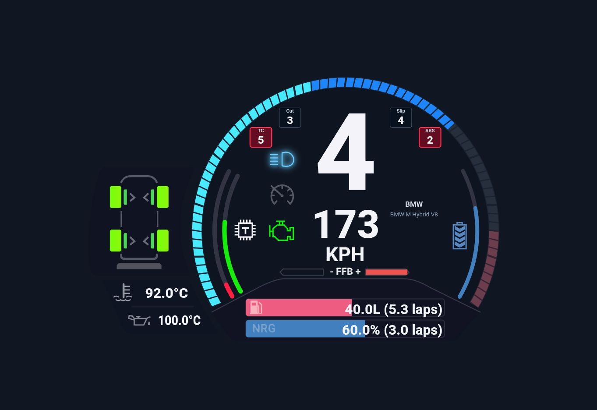
Built for
“just one more lap.”
A familiar LMU foundation, with Drive’s own finishing touches.
Your next lap awaits.
Settle into Le Mans Ultimate with instruments that suit your car. Headset on or screen up—make yourself at home.
Unsigned Windows installer. Includes .NET. WebView2 is required; VR mode also requires SteamVR.
Welcome to the cockpit.
Keep an eye on the weather, the field and that all-important pit stop. Then get back to chasing the next corner.
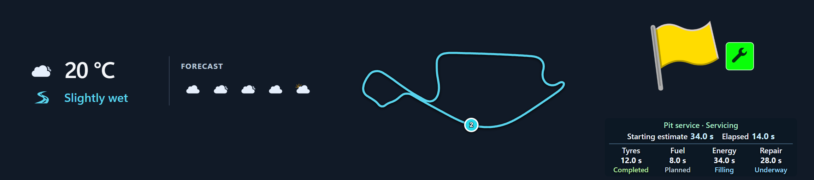
Same drive.
New view.
A little space for everything. Move it. Size it. Make it yours.
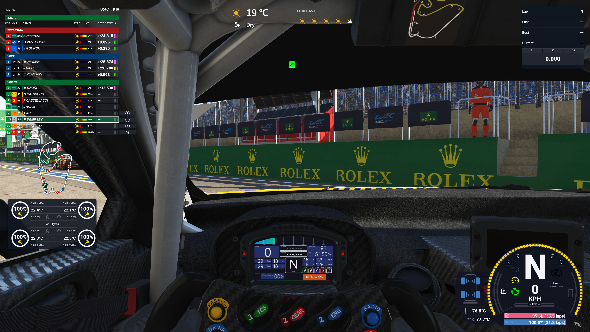
Make it
your own.
Get comfortable.
You might be here a while.
Give your car its own instruments. Put your panels where they feel right. Keep the race close and the useful stuff closer.
How’s the car?
A brush with the wall. A tyre that feels a bit off. Take a quick look at what your car is telling you.
Localise the damage.
Spot bodywork and suspension damage at a glance, right down to the affected corner.
Know which corner needs attention.
A hot engine, a stall and a mechanical failure call for different information. Drive gives overheating and suspected failure distinct warnings.
Take a closer look ↗Find your
favourite.
A familiar instrument with the car’s own character. Shape, colour, rim and shift-light treatments form a family of original Drive appearances.
23MANUFACTURER STYLES
06RPM-ARC DESIGNS
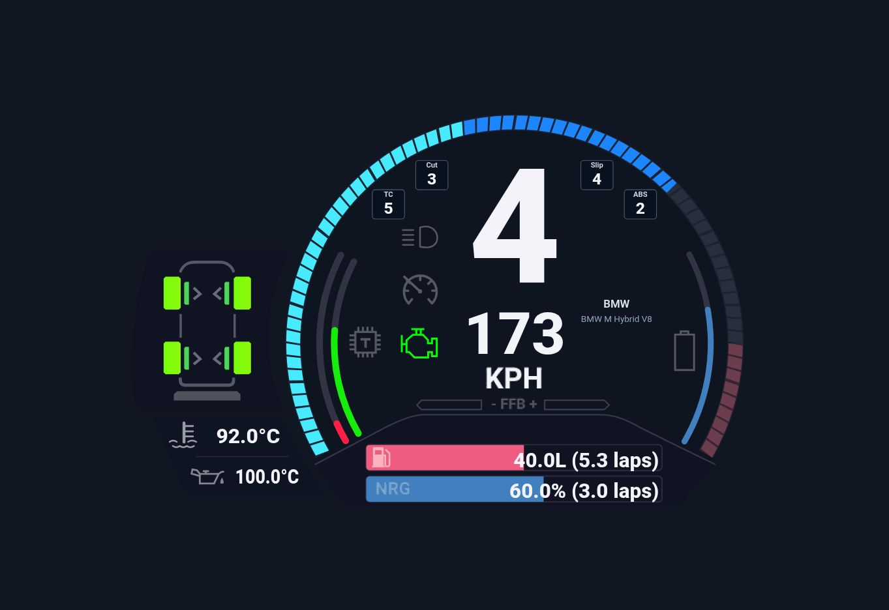
BMW M Hybrid V8
Angled segments and a blue/cyan palette give the BMW profile its character. Speed, gear and warning cues stay in familiar places.
Well, that
escalated.
A dry start. A passing storm. Then the wait for a drying line. Take a lap through it.
A peek behind the weather ↗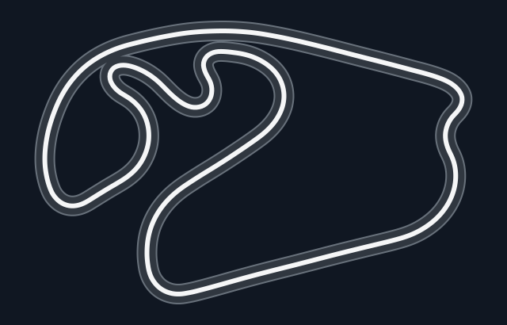
The replay couldn’t load.
- Dry
- Damp
- Slightly wet
- Wet
- Very wet
- Extremely wet
Feels familiar.
That’s the idea.
All the essentials, right where you expect them.
Speed, gear, fuel and energy. A familiar feel, with room to make it your own.
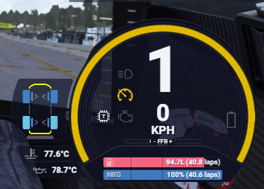
It starts with a good look.
Speed, gear and the essentials.
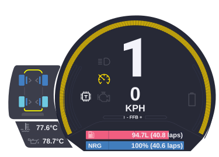
A familiar shape.
Speed and gear take centre stage.
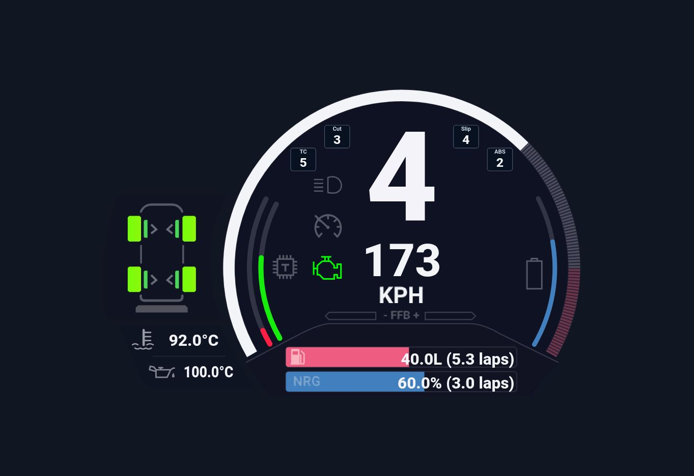
Make room in the cockpit.
Your instruments. Your layout.
Have a
look around.
Seven panels. Your way around the cockpit. See the map, weather and pit design in the HUD strip.
Seven panels carry the work into the driving view.
Explore the core interface, then follow each capability below.
The driving instrument.
Speed, gear and RPM keep the familiar central hierarchy. Fuel, virtual energy, temperatures and electronics bring the surrounding state into the same glance.
Keep the essentials close.
A closer
look.
Pick your
personality.

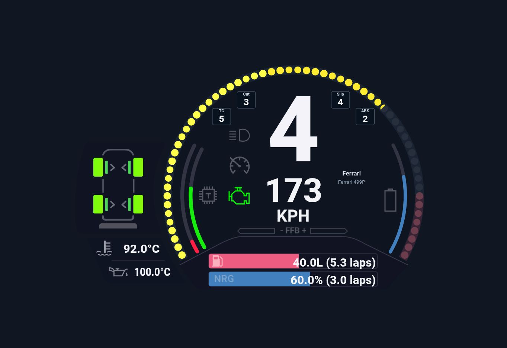

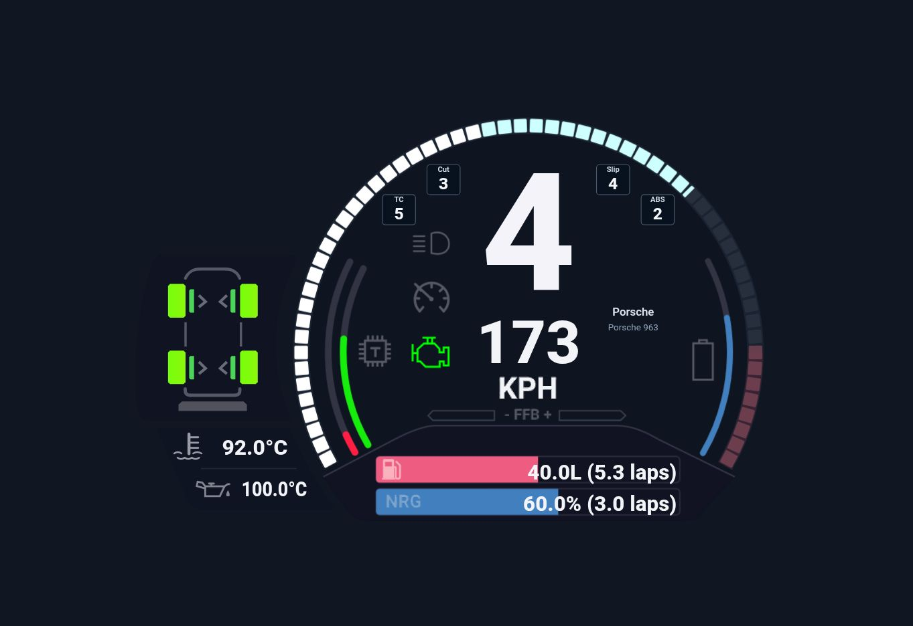

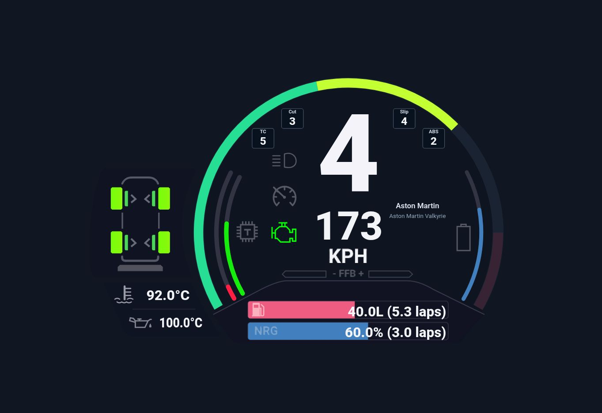